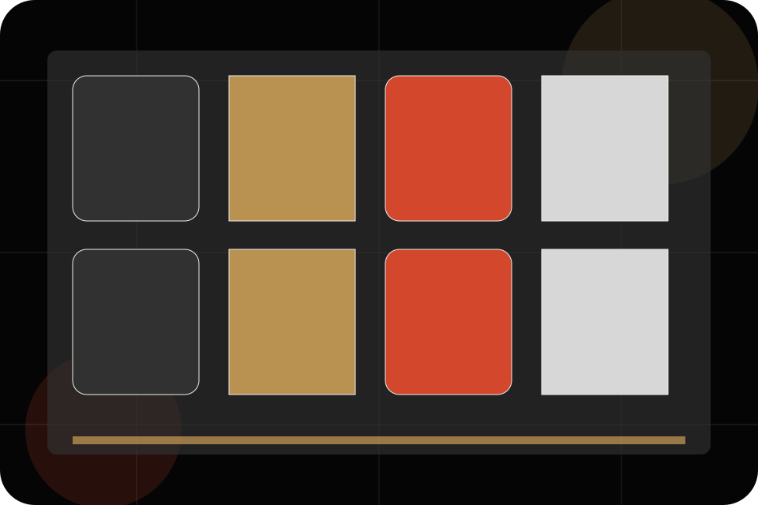
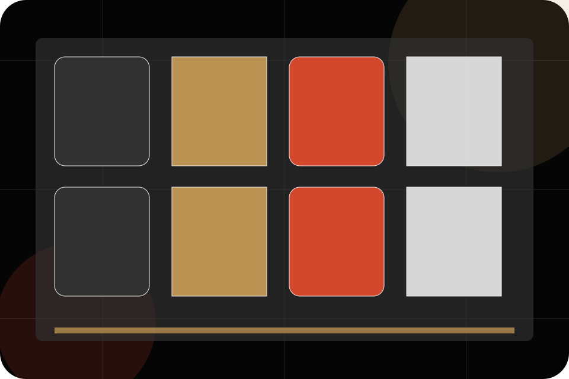
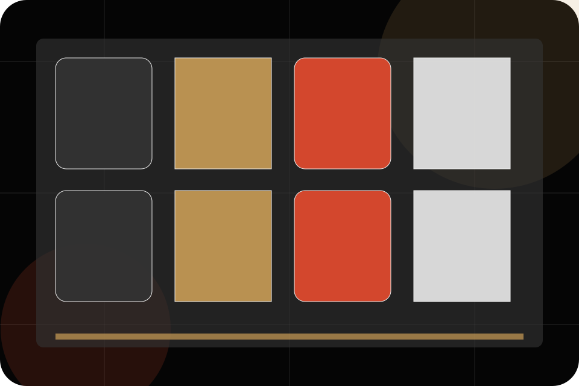
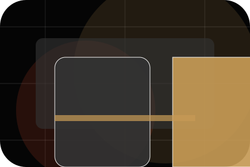
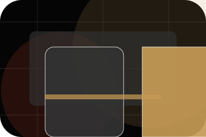
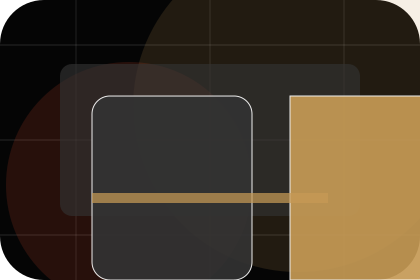
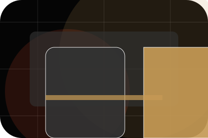
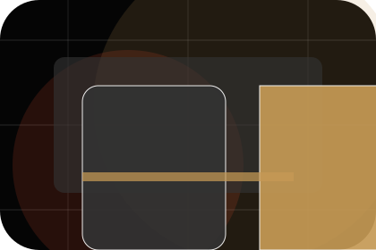
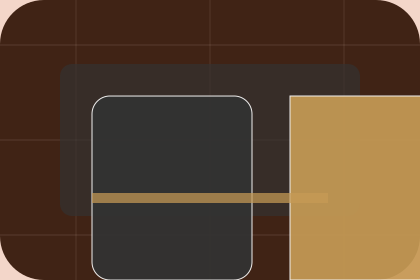

Gallery / 01
Gallery by Stage
Gallery shaped for entertainment, music & performance decisions.
Gallery opens as a clear entertainment decision hub: what Stage offers, who it helps, why it matters, and which route to take first.
The first screen combines positioning, proof, primary action, and fast internal navigation, so people can act immediately or compare the rest of the gallery route with context.
Exposure reviewControl planResponse route
Dark poster hero
Choose ticket fit
Select the closest route and Stage keeps the next step, proof, and follow-up expectation aligned with excitement and access.

Gallery / 02
Photos inside gallery
Photos adds dark context to the gallery route, using the indie film poster system structure to support excitement and access before visitors choose a next step.
Stage uses poster event cards and focused copy to make the decision easier to scan, aligning the section with excitement and access rather than filling space.
Explore GalleryPhotos gives the page a specific angle instead of repeating the navigation label.
The poster event cards show what to compare, what to avoid, and what matters most for entertainment, music & performance visitors.
The final cue points to a useful internal route so the section keeps the journey moving.


Gallery / 03
Videos inside gallery
Videos adds dark context to the gallery route, using the indie film poster system structure to support excitement and access before visitors choose a next step.
Stage uses poster event cards and focused copy to make the decision easier to scan, aligning the section with excitement and access rather than filling space.
Explore GalleryContext
Videos gives the page a specific angle instead of repeating the navigation label.
Judgment
The poster event cards show what to compare, what to avoid, and what matters most for entertainment, music & performance visitors.
Direction
The final cue points to a useful internal route so the section keeps the journey moving.
Gallery / 04
Stage inside gallery
Stage adds dark context to the gallery route, using the indie film poster system structure to support excitement and access before visitors choose a next step.
Stage uses poster event cards and focused copy to make the decision easier to scan, aligning the section with excitement and access rather than filling space.
Explore GalleryContext
Stage gives the page a specific angle instead of repeating the navigation label.
Judgment
The poster event cards show what to compare, what to avoid, and what matters most for entertainment, music & performance visitors.
Direction
The final cue points to a useful internal route so the section keeps the journey moving.
Gallery / 05
Crowd inside gallery
Crowd adds dark context to the gallery route, using the indie film poster system structure to support excitement and access before visitors choose a next step.
Stage uses poster event cards and focused copy to make the decision easier to scan, aligning the section with excitement and access rather than filling space.
Explore Gallery

Context
Crowd gives the page a specific angle instead of repeating the navigation label.
Gallery / 06
Details inside gallery
Details adds dark context to the gallery route, using the indie film poster system structure to support excitement and access before visitors choose a next step.
Stage uses poster event cards and focused copy to make the decision easier to scan, aligning the section with excitement and access rather than filling space.
Explore GalleryContext
Details gives the page a specific angle instead of repeating the navigation label.

Judgment
The poster event cards show what to compare, what to avoid, and what matters most for entertainment, music & performance visitors.

Direction
The final cue points to a useful internal route so the section keeps the journey moving.
Gallery / 07
Press inside gallery
Press adds dark context to the gallery route, using the indie film poster system structure to support excitement and access before visitors choose a next step.
Stage uses poster event cards and focused copy to make the decision easier to scan, aligning the section with excitement and access rather than filling space.
Explore GalleryContext
Press gives the page a specific angle instead of repeating the navigation label.
Judgment
The poster event cards show what to compare, what to avoid, and what matters most for entertainment, music & performance visitors.

Direction
The final cue points to a useful internal route so the section keeps the journey moving.
Gallery / 09
View inside gallery
View adds dark context to the gallery route, using the indie film poster system structure to support excitement and access before visitors choose a next step.
Stage uses poster event cards and focused copy to make the decision easier to scan, aligning the section with excitement and access rather than filling space.
Explore GalleryContext
View gives the page a specific angle instead of repeating the navigation label.
Judgment
The poster event cards show what to compare, what to avoid, and what matters most for entertainment, music & performance visitors.
Direction
The final cue points to a useful internal route so the section keeps the journey moving.
Gallery / 10
View Tickets
Stage closes the gallery route with a clear action, a quick reminder of the value, and a low-friction way to view tickets.
Visitors who are ready can use the primary action. Visitors who are still comparing can scan the section links, proof, and support routes before they view tickets.
View TicketsThe final block keeps the choice simple: act now, compare one more proof route, or send enough detail for a focused response.
View Ticketsexcitement and access
View Tickets
An entertainment site with film-poster rhythm, dark editorial cards, ticket routes, and venue proof. Gallery ends with a direct path to view tickets, plus enough context for visitors who still need to compare.

View TicketsImportant notes before you act
Information is provided for planning and should be reviewed for the final client, location, and operating rules.